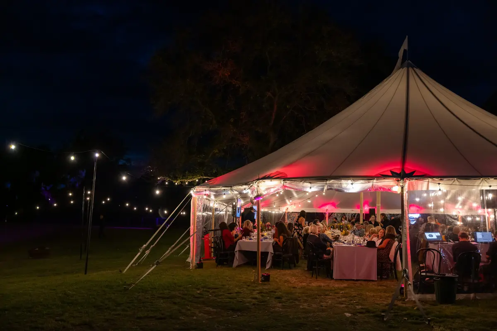

Corporate events need reliable gear and people who turn up prepared. Nobody wants to be fiddling with a projector while the CEO waits at the podium. We set everything up early, test it properly, and have a tech on site to manage it through the event.
We've done production for gala dinners, charity fundraisers, conferences, AGMs, product launches, and awards nights around Christchurch. The gear is clean and professional, and our crew understands that corporate events run to a schedule with no room for delays.

PA for the room, wireless mics for speakers, projectors or LED screens for slides, and confidence monitors so presenters can see their notes. We handle the laptop inputs and make sure everything talks to everything before the audience arrives.
Venue lighting to set the mood, a sound system for speeches and entertainment, and stage lighting for award presentations. We can add dance floor lighting and a DJ setup for the after-party. Everything transitions smoothly from formal to fun.
Pop-up events, product launches, and branded experiences that need to look polished and run without a hitch. We supply the AV gear, rig it to the space, and run it on the day. Fast setups and clean pack-outs are part of the deal.
We've done production for Dine for a Cure, Red Bull activations, and corporate functions of all sizes. We show up on time, dressed appropriately, and ready to go. The tech running your event has done this before and knows how to stay invisible while keeping everything working perfectly.
For broader event production or specific gear like speakers and lighting, check out our other pages. See our full services overview or get in touch to discuss your event.
Tell us about your event and we'll put a package together.
Get in touch or call 021 178 0355.
Yes. We arrive, set up all the AV gear, test everything, run it during the event, and pack it all out afterwards. You don't need to lift a finger on the tech side.
We do multi-day conferences and events regularly. We can set up on day one and leave the gear in place for the duration, with a tech on site each day to manage it. Or we can bump in and out each day if the venue requires it.
Yes. We supply projectors, screens, confidence monitors, presentation clickers, and laptop inputs. We can also provide LED screens for larger venues. We'll test everything with your presenter's laptop before the event starts.
All Ears Events Limited
20 Southwark Street, Christchurch
021 178 0355 · hello@allears.nz
Mon-Fri 9am-4pm